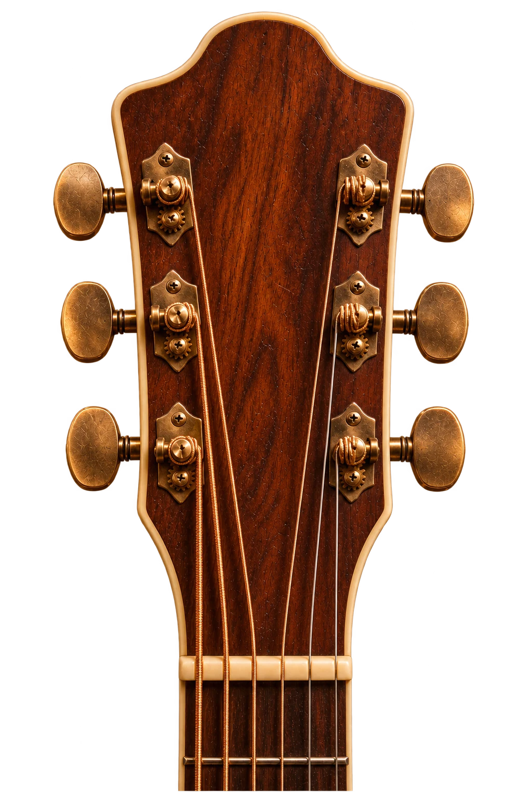

Guitar tuner v2
Standard · auto string
–
Play one open string
– ¢
Start the microphone, or tap a string to hear its note.

Tap a string to hear it. While listening, tap to lock it.
Sound & mic
Recorded guitar · calibrated playback
Microphone & tuning settings
Higher picks up softer notes. Lower it in a noisy room.
Hz
Microphone audio is analysed on this device and is never uploaded.